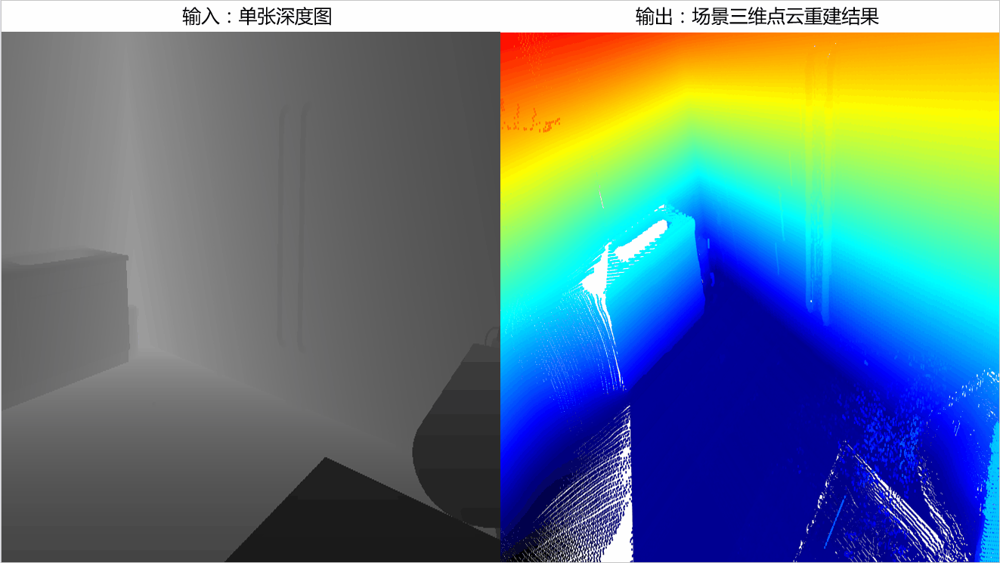
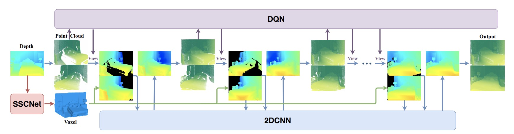
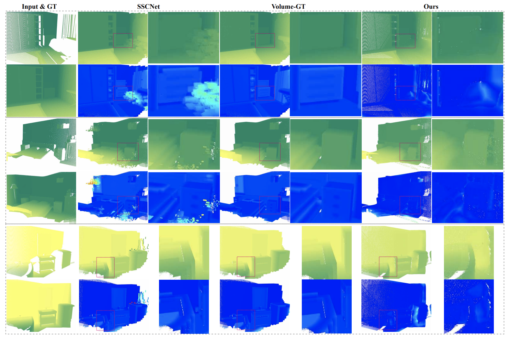
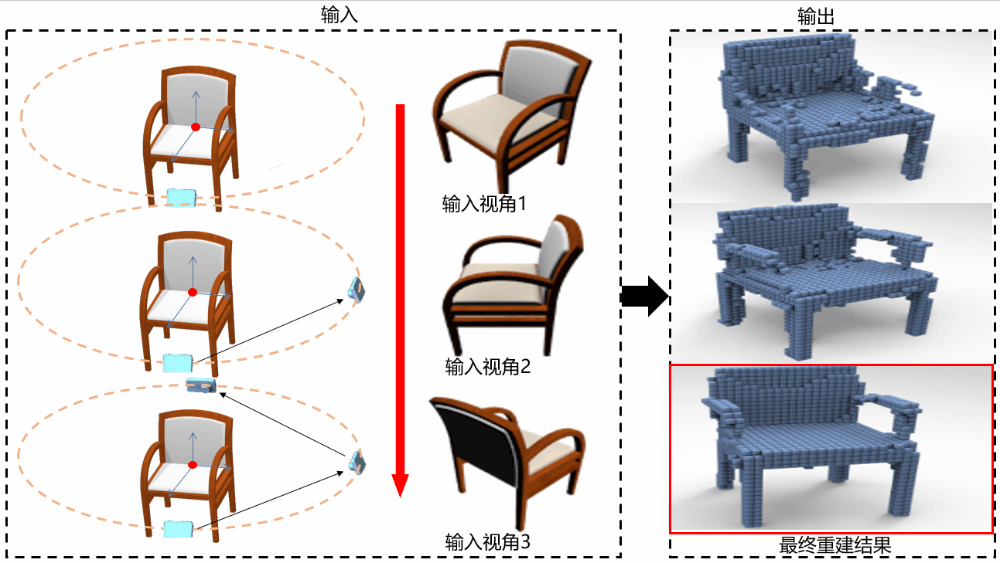
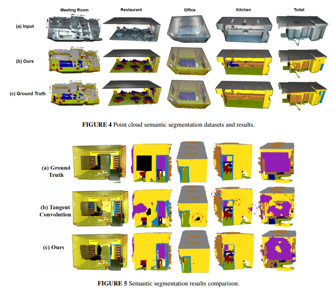
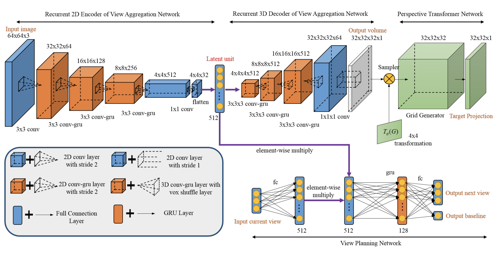
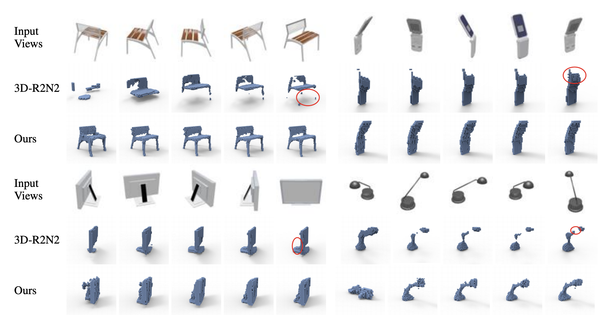

|
Image-based 3D
Indoor Scene Modeling
|
|
Image-based 3D indoor
scene reconstruction is widely used in
different areas, such as robotic navigation, virtual reality and interior design. The goal of
this task is to use as little as possible images as input and output high-quality 3D indoor
scene models, expressed as voxel grid, point cloud or triangle mesh. In particular for object
reconstruction or local scene completion, it is better to take single image as the whole
task’s input, and for whole scene reconstruction task, less number of inputs would save
mobile costs for sensors. Unfortunately, the information provided by 2D images is lacking for
what is needed for 3D scene modeling tasks because of the huge gap between 2D domain to 3D
domain. Thus traditional methods always use multi-view images as input to solve this problem.
In this project, we are
developing techniques to tackle this
problem by dividing it into different related sub-problems. A whole indoor scene can be
composed of a series of local scenes, and a local scene can be composed of a series of
objects. Based on the above observations, we first address the object reconstruction problem
guided by a active view planner, and we then propose a deep reinforcement learning method for
local point scene reconstruction from a single depth image. We are currently working on fast
and accurate whole scene reconstruction.
|
|
Deep Reinforcement
Learning of Volume-guided Progressive View Inpainting for 3D Point Scene
Completion from a Single Depth Image [paper]
[suppl] [code]
[dataset]
Xiaoguang Han,
Zhaoxuan Zhang, Dong Du, Mingdai Yang, Jingming Yu, Pan Pan, Xin Yang, Ligang
Liu, Zixiang Xiong and Shuguang Cui
Proc.
IEEE CVPR (Oral, CCF A),
June 2019
|
|


The pipeline
of our method.
|
|

Comparisons
against the state-of-the-arts. Given different
inputs and the referenced groundtruth, we show the completion results
of three methods, with the corresponding point cloud error maps
below, and zoom-in areas beside. More blue more accurate.
|
|
|
Input-Output:
Given an single depth image,
our method progressively generate the missing points of the initial point cloud corresponding to the
input depth map under the optimal sequence of viewpoints.
Abstract. We present a deep reinforcement learning method
of progressive view inpainting for 3D point scene completion under volume guidance, achieving
high-quality scene reconstruction from only a single depth image with severe occlusion. Our approach
is end-to-end, consisting of three modules: 3D scene volume reconstruction, 2D depth map inpainting,
and multi-view selection for completion. Given a single depth image, our method first goes through the
3D volume branch to obtain a volumetric scene reconstruction as a guide to the next view inpainting
step, which attempts to make up the missing information; the third step involves projecting the volume
under the same view of the input, concatenating them to complete the current view depth, and
integrating all depth into the point cloud. Since the occluded areas are unavailable, we resort to a
deep Q-Network to glance around and pick the next best view for large hole completion progressively
until a scene is adequately reconstructed while guaranteeing validity. All steps are learned jointly
to achieve robust and consistent results. We perform qualitative and quantitative evaluations with
extensive experiments on the SUNCG data, obtaining better results than the state of the art.
|
|
|
Active Object Reconstruction
Using a Guided View Planner
[paper] [suppl] [code]
[dataset]
Xin Yang, Yuanbo
Wang, Yaru Wang, Bacai Yin, Qian Zhang, Xiaopeng Wei and Hongbo Fu
Proc.IJCAI (CCF
A), July
2018
|
|



Illustration of network
architecture. Our entire network consists
of four components: a Recurrent 2D Encoder, a Recurrent 3D Decoder,
Perspective Transformer and a View Planner.
|
|

Qualitative results of
reconstruction samples for example view
sequences. 3D-R2N2 generally fails in the categories with much higer
variation (eg. the lamp in the bottom right corner) while our model does
better in feature extraction and view aggregation, leading to a more
accurate reconstruction.
|
|
|
Input-Output:
Given a random view
image of the target object, our network reconstruct the 3D volume of the object and decide
the next best view according to the current reconstruction quality.
Abstract. Inspired by the recent advance of
image-based object reconstruction using deep learning, we present an active reconstruction
model using a guided view planner. We aim to reconstruct a 3D model using images observed
from a planned sequence of informative and discriminative views. But where are such
informative and discriminative views around an object? To address this we propose a
unified model for view planning and object reconstruction, which is utilized to learn a
guided information acquisition model and to aggregate information from a sequence of
images for reconstruction. Experiments show that our model (1) increases our
reconstruction accuracy with an increasing number of views (2) and generally predicts a
more informative sequence of views for object reconstruction compared to other alternative
methods.
|
|